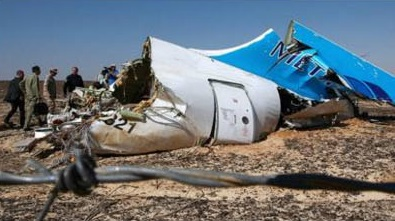
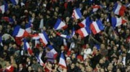
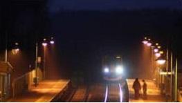
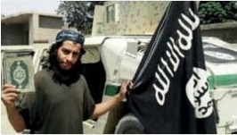
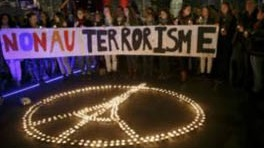

Nga nói khủng bố khiến phi cơ Nga bị đâm
Nga nói hành động khủng bố đã khiến chiếc phi cơ của Nga bị đâm ở Ai Cập hồi tháng 10 và giết hại tất cả 224 người trên máy bay.
17 tháng 11 2015 | Thế giới
17 tháng 11 2015 | Thế giới


Bóng đá: Tuyển Anh thắng Pháp 2-0
Tuyển An thắng Pháp 2-0 trên sân Wembley nhờ công của Alli ở phút 39 và Rooney phút 47, trong trận cầu diễn ra chỉ trong vài ngày sau vụ khủng bố ở Paris.5 giờ trước | Thế giới
Tham nhũng, ma túy đông gấp bội " đối lập"?
Bộ trưởng công an Trần Đại Quang cho biết trong hơn ba năm qua. Bộ này xác định có 350 đối tượng lập hội chống đối.17 tháng 11 2015 | Việt Nam
Góc nhìn và chuyên mục

Bí ẩn những chuyến tàu ma ở Anh
QUẢNG CÁO
Đài Loan, Tây Tạng và những quốc gia không tồn tại

Nghi phạm chính vụ Paris: Abdelhamid Abaaoud
Nhà nước Hồi giáo thay đổi chiến thuật

K-9 là gì và Việt Tân ứng xử ra sao